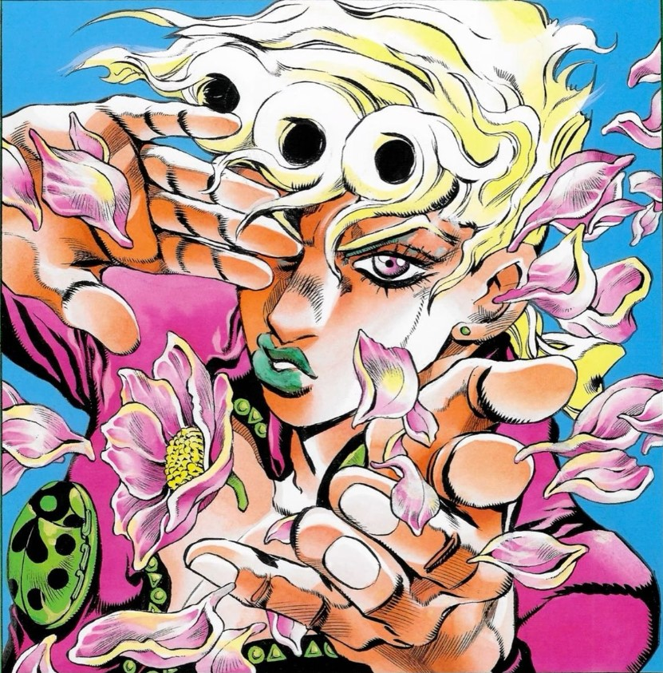
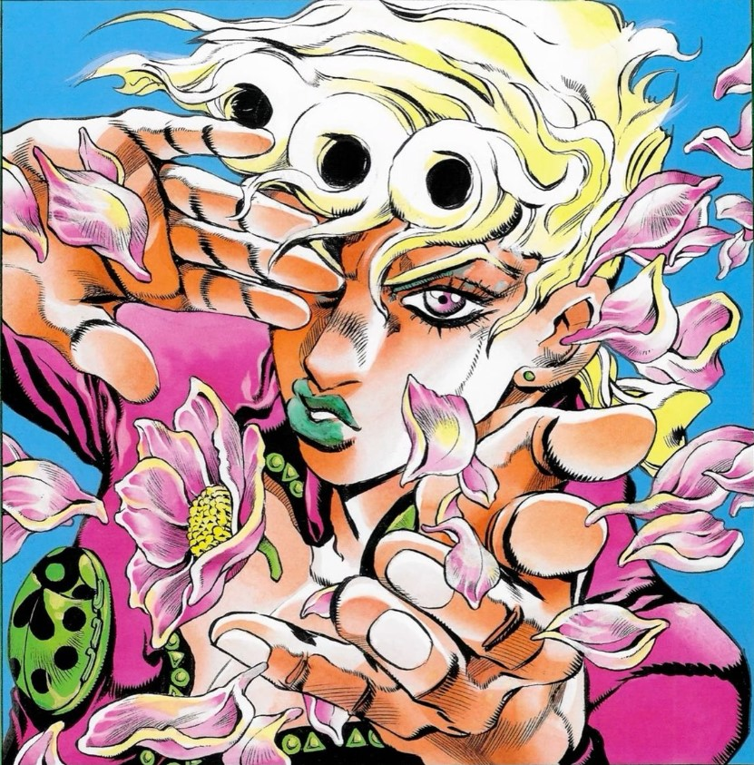
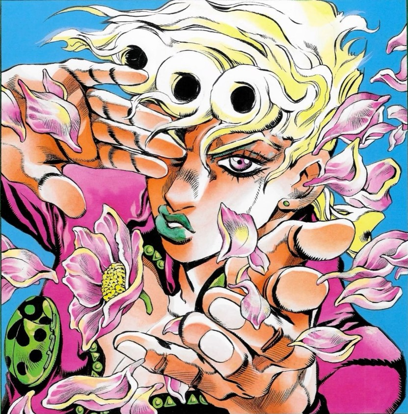
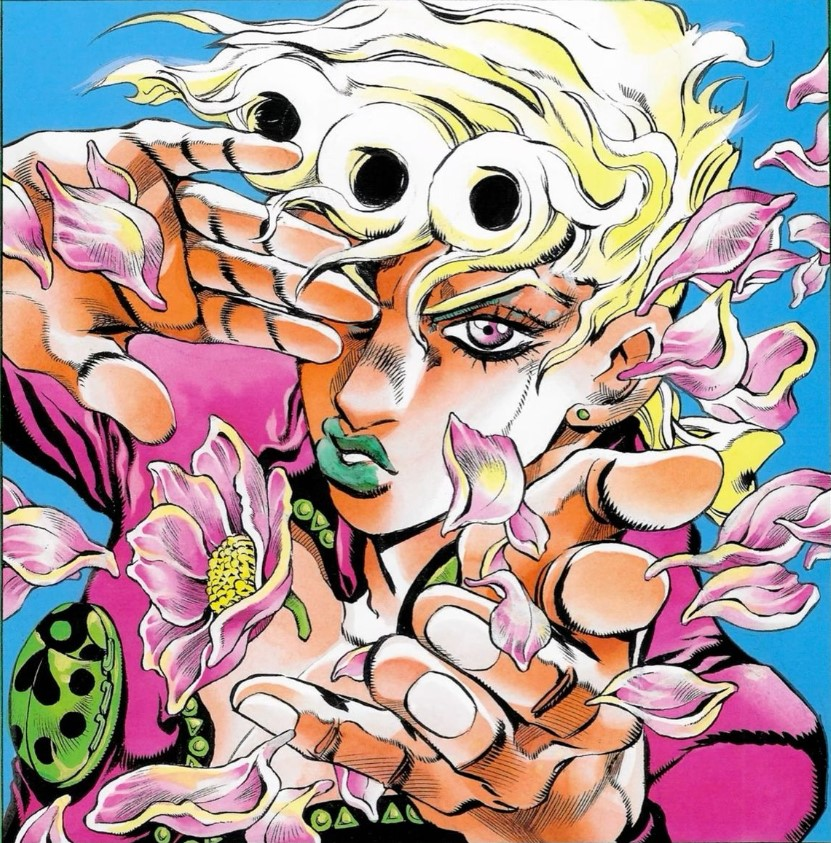

 

Mis gustosEl Anime |
|
|
El anime ha sido una de las experiencias más fascinantes en mi vida, y todo empezó con Nanatsu no Taizai. Fue la primera serie que me atrapó por completo, (y aunque ahora sea marcada como uno de los peores animes estilo shonen) con sus épicas batallas, personajes inolvidables y una historia llena de giros emocionantes me enamoré. Desde ahí, me sumergí en este increíble mundo de series que van desde la acción hasta la comedia y el romance, y cada una me ha dejado algo especial. A lo largo de los años, he disfrutado de muchísimos animes. Series como Love Is War, Blue Lock, y Horimiya han sido de mis favoritas por sus emocionantes escenas de acción y el crecimiento de sus personajes. Además, títulos como Orange me llegaron al corazón por la forma en que tocan temas profundos como la amistad y la pérdida. También me ha fascinado la magia y los momentos divertidos de Saiki Kusuo no Ψ-nan. Quiero mencionar especificamente a Kaguya-sama: Love Is War el cual es sin duda mi anime favorito de romance. La trama gira en torno a Kaguya Shinomiya y Miyuki Shirogane, dos genios que, a pesar de estar locamente enamorados, se niegan a confesar sus sentimientos, lo que lleva a una batalla psicológica hilarante por hacer que el otro se declare primero. Lo que realmente me hace reír son sus ingeniosas escenas con remates y dobles remates de chistes, donde cada uno intenta superar al otro con estrategias cada vez más absurdas y creativas. La combinación de romance y comedia es simplemente perfecta, haciendo que cada episodio sea una experiencia divertida que siempre me deja con una sonrisa. Una de las cosas que realmente hace que Kaguya-sama: Love Is War sea tan divertida es el narrador. Su estilo único le da un toque especial a la serie, siempre soltando comentarios ingeniosos que resaltan la tensión entre Kaguya y Shirogane. Es como si estuviera ahí, observando todo y brindando contexto a las situaciones, lo que ayuda a entender mejor lo que piensan y sienten los personajes. Además, el narrador añade un montón de humor a la mezcla, intensificando las emociones en los momentos clave. La manera en que comenta las estrategias y pensamientos de Kaguya y Shirogane hace que cada escena sea aún más entretenida y, la verdad, es imposible no soltar una risa en esos momentos. Pero si tuviera que elegir un solo anime como mi favorito, sin duda sería JoJo's Bizarre Adventure. (Inclusive tengo posters de vidrio en mis habitaciones de mi casa.) Cada parte de esta serie es un viaje lleno de sorpresas, y el personaje que más me impactó es Giorno Giovanna, que es justo el protagonista de la imagen que representa esta sección. Su historia en JoJo's siempre será una de las más épicas para mí, con su determinación inquebrantable y ese icónico tema musical que nunca olvidaré. 
Especificamente esta parte: JoJo's Bizarre Adventure Parte 5: Golden Wind nos lleva a Italia, donde seguimos la historia de Giorno Giovanna, un joven con un sueño muy claro: convertirse en un "gang-star". Giorno es el hijo de Dio Brando (sí, el mismo villano de las primeras partes de JoJo), pero también tiene la sangre de los Joestar, lo que lo convierte en un personaje complejo y lleno de matices. A lo largo de la serie, Giorno se une a un grupo de mafiosos, Passione, que bajo la guía de su líder Bruno Bucciarati, buscan liberar a Italia del control de su jefe tiránico. Lo que hace a esta parte tan única es el desarrollo de sus personajes y las batallas tan creativas que vemos. Cada uno de los miembros de Passione tiene un poder increíble gracias a sus Stands, y ver cómo utilizan estas habilidades de formas estratégicas y sorprendentes en las peleas es una de las mejores cosas de Golden Wind. Los Stands como Gold Experience, Sticky Fingers, y King Crimson nos mantienen al borde del asiento con sus habilidades, y las peleas se vuelven un juego mental tanto como físico. Ademas de momentos graciosos e iconicos como este, el torture dance. Hablando de Giorno, su Stand, Gold Experience, tiene la capacidad de darle vida a objetos inanimados, pero su Stand evolucionado, Gold Experience Requiem, es una de las habilidades más poderosas en todo el universo de JoJo. Literalmente, puede devolver todo a "cero", anulando cualquier ataque o acción del enemigo, lo que lo convierte en una fuerza imparable. Más allá de las batallas épicas, Golden Wind tiene momentos profundamente emocionales. Los vínculos entre los miembros del equipo son fuertes, y algunas de las despedidas más tristes de la serie ocurren aquí (como la muerte de uno de mis personajes favoritos ¡sí, te miro a ti, Narancia!). Estos momentos hacen que la serie sea no solo emocionante, sino también conmovedora. Y, por supuesto, la música El tema de Giorno Giovanna se ha vuelto icónico en toda la cultura de internet. Cada vez que suena esa melodía épica, sabes que algo increíble está a punto de pasar. Es uno de esos temas que te dan escalofríos cada vez que lo escuchas. En resumen, Golden Wind es una de las partes más emocionantes de JoJo's Bizarre Adventure. Con una mezcla perfecta de acción, estrategia, emoción y personajes inolvidables, es una historia que sigue resonando con los fans y deja una huella imborrable en la saga. El anime para mí es más que una forma de entretenimiento, es una manera de explorar mundos nuevos y conectar con personajes que, de alguna forma, siempre dejan una huella. Y aunque he visto una larga lista de series, siempre estaré abierto a descubrir nuevas historias que me sigan sorprendiendo. @Copyright 2024 Mandanos un mensaje via email a juanjoboar2006@gmail.com | |